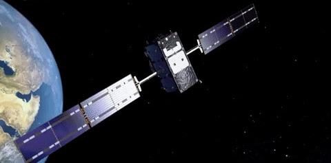

A satellite or artificial satellite is a object intentionally placed into orbit in outer space. Satellites have a variety of uses, including communication relay, weather forecasting, navigation (GPS), broadcasting, scientific research, and Earth observation. Additional military uses are reconnaissance, early warning, signals intelligence and, potentially, weapon delivery. Other satellites include the final rocket stages that placed satellites in orbit and formerly useful satellites that are now defunct.
Except for passive satellites, most satellites have an electricity generation system for equipment on board, such as solar panels or radioisotope thermoelectric generators (RTGs). Most satellites also have a method of communication to ground stations, called transponders. Many satellites use a standardized bus to save cost and work, the most popular of which is small CubeSats. Similar satellites can work together as a group, forming constellations. Because of the high launch cost to space, satellites are designed to be as lightweight and robust as possible. Most communication satellites are radio relay stations in orbit and carry dozens of transponders, each with a bandwidth of tens of megahertz.

The first artificial satellite to be launched into the Earth's orbit was the Soviet Union's Sputnik 1, on 4 October 1957. As of April 2022, there were 5,465 operational satellites in Earth orbit, of which 3,434 belong to the United States (2,992 commercial), 541 belong to China, 172 belong to Russia, and 1,319 belong to other nations. Earth observation Earth observation satellites is designed to monitor and survey the Earth, called remote sensing. Most Earth observation satellites are placed in low Earth orbit for a high data resolution, though some are placed in a geostationary orbit for an uninterrupted coverage. Some satellites are placed in a Sun-synchronous orbit to have consistent lighting and obtain a total view of the Earth. Depending on the satellites' functions, they might have a normal camera, radar, lidar, photometer, or atmospheric instruments. Earth observation satellite's data is most used in archaeology, cartography, environmental monitoring, meteorology, and reconnaissance applications.[citation needed] As of 2021, there are over 950 Earth observation satellites, with the largest number of satellites operated Planet Labs.